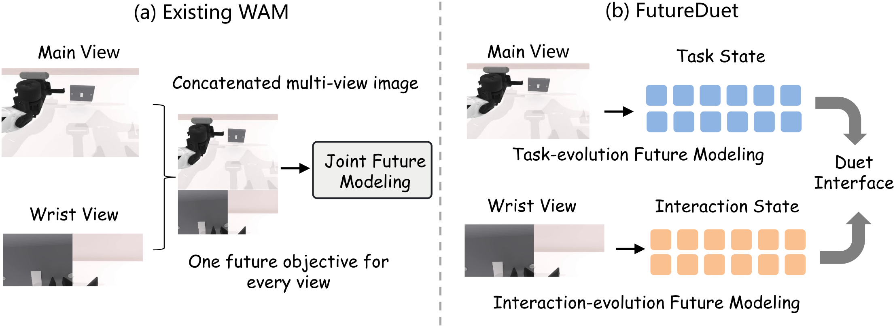
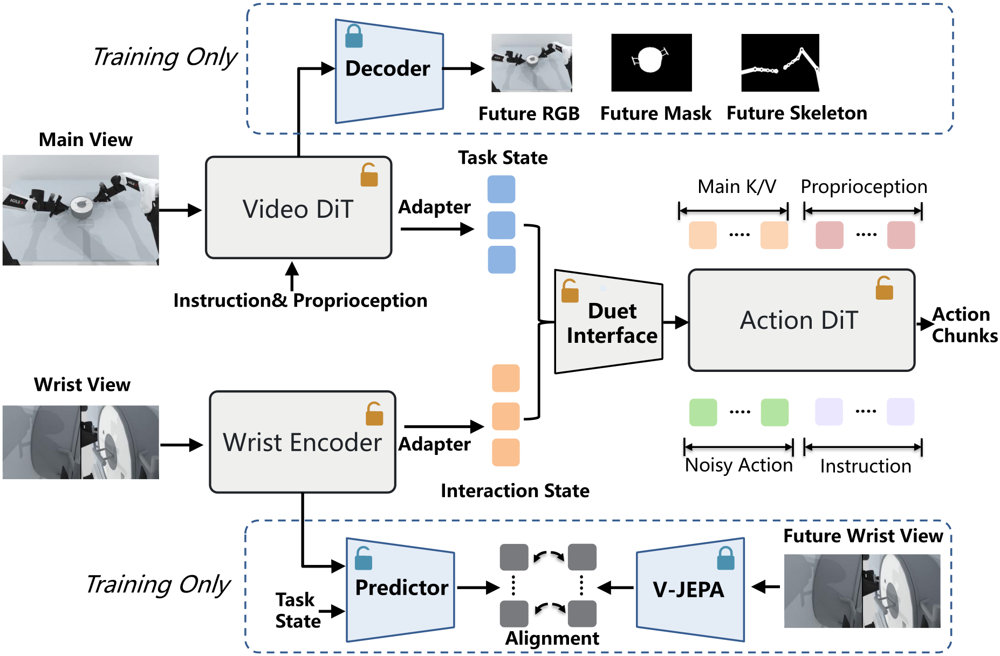
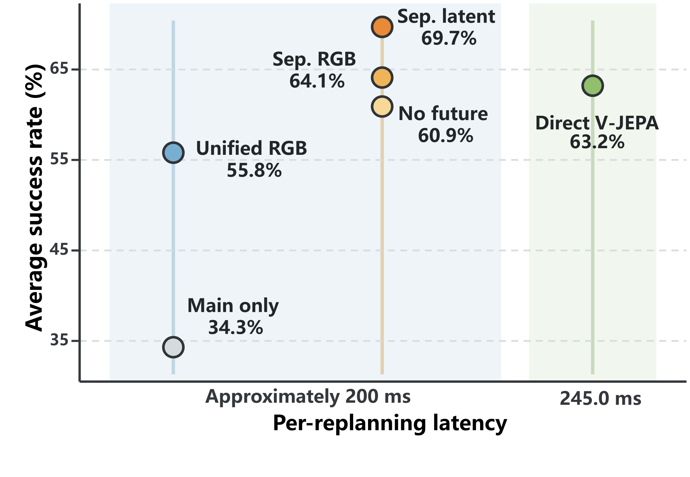
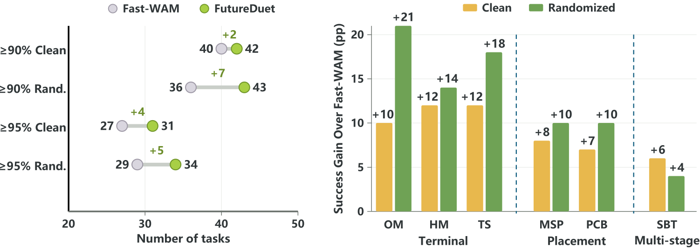
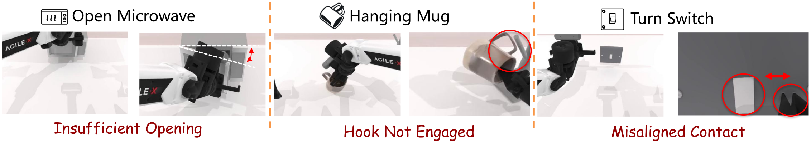
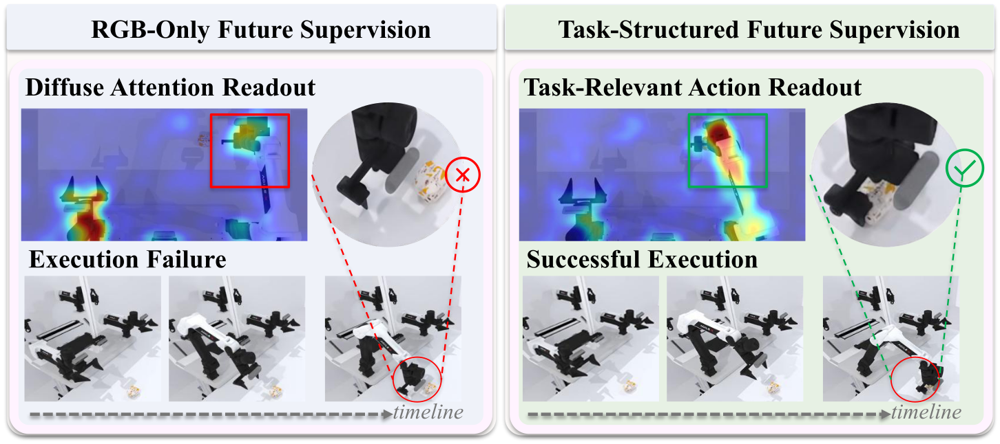
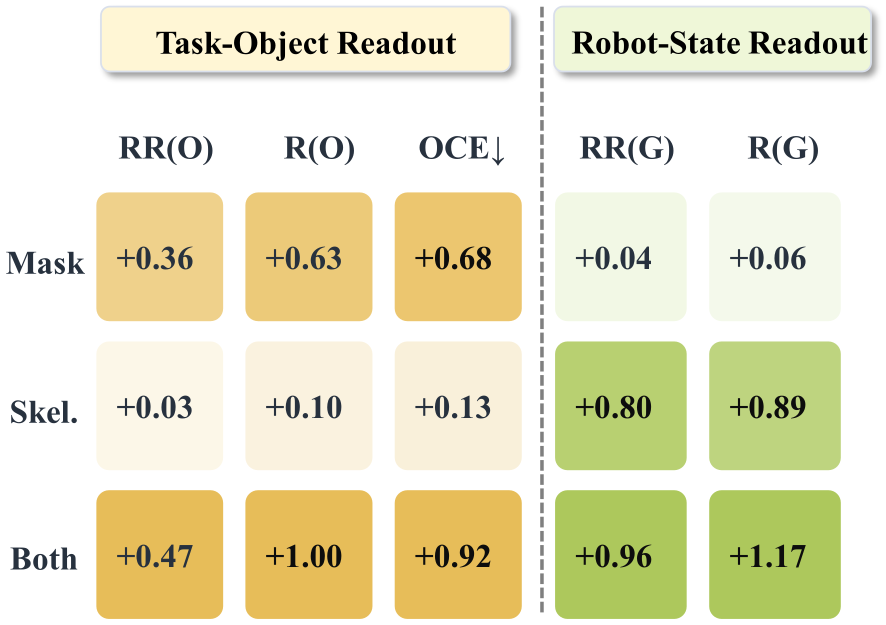

Stable scene frame
Main view → Task State
Model scene-level progress, with masks and skeletons focusing supervision on task objects and robot motion.
Preprint · World Action Models
1 Tsinghua University
2 TeleAI, China Telecom
3 Shenzhen Technology University

01 · Insight
Stable scene frame
Model scene-level progress, with masks and skeletons focusing supervision on task objects and robot motion.
Moving camera frame
Model short-horizon interaction changes without reconstructing every camera-induced appearance change.
Use both views for control; supervise each view according to the future it reveals.
02 · Method
View-specific objectives shape two compact states; the Duet Interface reunites them for action generation.

03 · Results
The largest RoboTwin50 gains appear where success depends on precise contact geometry.
RoboTwin50
clean
RoboTwin50
randomized
LIBERO
average
Separate future latent
over unified RGB
Wrist pathway study
With the deployed route fixed, future RGB improves success to 64.1% and future latent supervision to 69.7%, at the same 201.20 ms latency.


Where difficulty remains
Residual failures arise at the final opening, hooking, or contact stage.

04 · Readout evidence
Masks emphasize task objects; skeletons emphasize robot motion.


05 · Citation
@misc{wu2026futureduet,
title = {FutureDuet: Decoupling Observation Access from Future Supervision in World Action Models},
author = {Jie Wu and Yuzhi Huang and Junqi Liu and Weichen Zhang and Haibin Huang and Yin Chen and Jingyan Jiang and Chi Zhang},
year = {2026},
eprint = {2609.34362},
archivePrefix = {arXiv},
primaryClass = {cs.RO},
url = {https://arxiv.org/abs/2609.34362}
}